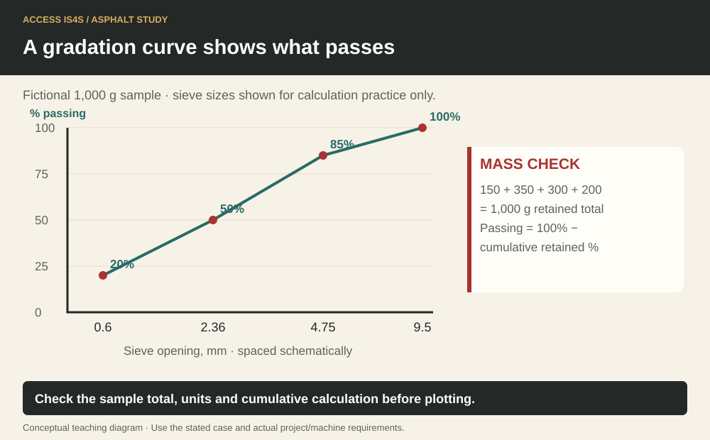
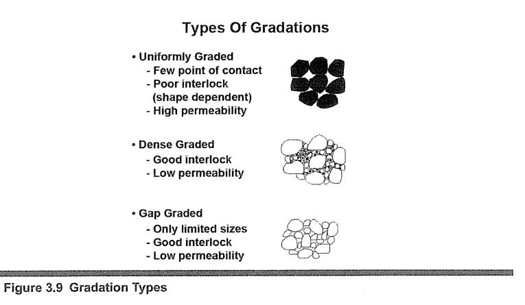

Study chapter · Outline C2
Types and specifications of aggregates
An aggregate name is the beginning of a specification, not its complete meaning. The useful questions are: What particles are present? How do they interact? How do water and loading affect them? Which measured properties must the product meet? Gradation is the distribution of particle sizes; the properties of the blend are different from the properties of a single stone.
Learning step 1
Aggregate processing
Crushing, screening and washing perform different jobs. Crushing can alter size and particle shape; screening separates sizes; washing removes specified fine material. A product may pass through more than one stage. The process name does not prove the final result: test the identified product using the required method and compare it with the applicable specification. A change in source, wear or handling can affect results even when the nominal process remains the same.
A gradation curve shows what passes

Learning step 2
Characteristics
Permeability describes the ability of a material arrangement to transmit water. Load-bearing response concerns how the structure supports loading. Resistance to shearing depends on particle interaction and other conditions. Particle shape, texture, grading, fines and moisture can influence these behaviours. An open-looking product is not automatically a designed drainage layer; the complete gradation, contamination and drainage arrangement matter.
Liquid limit and plastic limit characterize consistency of the applicable fine-grained material under specified tests. The plasticity index is liquid limit minus plastic limit. These are not moisture limits for every whole aggregate or a visual test of a pile. Gradation is normally recorded as cumulative percent passing identified sieves. Keep sieve size, units, test method and product/sample identity with the result.
Learning step 3
Common products
Pit run describes material taken from a deposit with limited processing; its properties can vary. Screened road base, including a nominal '3-inch minus' description, needs the specified grading and quality limits. Bedding sand is selected for the relevant pipe or bedding design. Crushed road mulch is a regional/product term that must be resolved through its actual specification. Asphalt aggregates are selected and blended for the approved mixture.
Drain rock serves an intended drainage use with specified grading/cleanliness. Chips and driveway chips describe particular aggregate products whose intended application and grading must be established. Reclaimed asphalt pavement (RAP) contains recovered aggregate and aged binder; it is not interchangeable with clean virgin stone. Concrete sand, including material specified under ASTM C33, has its own requirements. Stucco sand is selected for a different mortar/render application. A shared word 'sand' does not authorize substitution among them.
Gradation types

Try it and explain your thinking
Make a product selection table for bedding, drainage, asphalt mixture and concrete sand
Make a product selection table for bedding, drainage, asphalt mixture and concrete sand. Name the information needed before accepting a substitution.
Skills you use: Reading, Writing, Problem solving.
Recalculate the example if 20 g is missing from the total
Recalculate the example if 20 g is missing from the total. Then calculate PI for fictional LL = 32 and PL = 21. Explain the limits of both results.
Skills you use: Numeracy, Communication.
Plot the supplied cumulative passing values with clearly labelled sieve positions
Plot the supplied cumulative passing values with clearly labelled sieve positions. Save the chart, let a partner find the missing real sieve sizes, and revise its title to avoid implying acceptance.
Skills you use: Digital, Collaboration, Adaptability, Creativity and innovation.
Show the skill in supervised practice
Machine/model/serial or classroom case: __________ · Manual/procedure and revision: __________ · Date/location: __________ · Learner/observer: __________
Record each criterion as 0—not yet demonstrated, 1—with task-solving support, or 2—independently under the stated conditions. Mark unobserved criteria separately; do not convert missing opportunity into a zero. The assessor determines the required repeat practice and applicable qualification requirements. A critical failure means hold, correction and reassessment regardless of the numerical result. Use safe simulations for classroom reasoning; actual operation requires the selected equipment, approved conditions and competent supervision.
| What the observer checks | Result | Evidence |
|---|---|---|
| Critical: Safe access, surroundings and communication maintained. | Pass / hold | Observation: __________________ |
| Critical: Required energy, heat, movement and public-access controls maintained for the actual task. | Pass / hold | Observation: __________________ |
| Use labelled samples and the approved test method under supervision; do not identify a product by colour alone. | 0 / 1 / 2 | Evidence/help: ________________ |
| Observe correct terminology, sample/product traceability and interpretation of a sieve table. | 0 / 1 / 2 | Evidence/help: ________________ |
| Laboratory competence and approval of a source/product require the applicable qualified testing and decision process. | 0 / 1 / 2 | Evidence/help: ________________ |
Actual conditions and support: __________________________
Feedback, next practice and authorized release/status: __________________________
Sources and further reading
- SkilledTradesBC. (2016). Asphalt Paving/Laydown Technician program outline, C2, printed p. 38; source PDF pp. 40–40.
- Asphalt Institute. (2007). The asphalt handbook (7th ed., MS-4), Chapter 3: Mineral Aggregates and Mixture Additives; source PDF pp. 143–192. Open publication.
- BC Ministry of Transportation and Transit. (2025). 2025 Standard Specifications for Highway Construction, Volume 2. Open publication.
Figure-specific pages, editions and original contributors are credited beside each image. Current project requirements and the matching machine instructions determine practical use.